Calendário 2021.2

Lista dos Alunos Excedentes após o De/Para 2021/2
Só duas turmas tiveram alunos excedentes:
BD2 Noite:
1120486100056
1620486100038
1710486100051
1720486100025
1720486100027
1810486100079
1820486100017
1910486100006
1910486100043
1920486100017
1920486100055
2010486100003:
POO Noite:
1520486100074
1620486100038
1710486100051
1810486100040
1810486100046
1920486100021
1920486100047
1920486100068
2010486100003
2010486100006
2010486100064

Horário 2021-2
Primeiro Período:
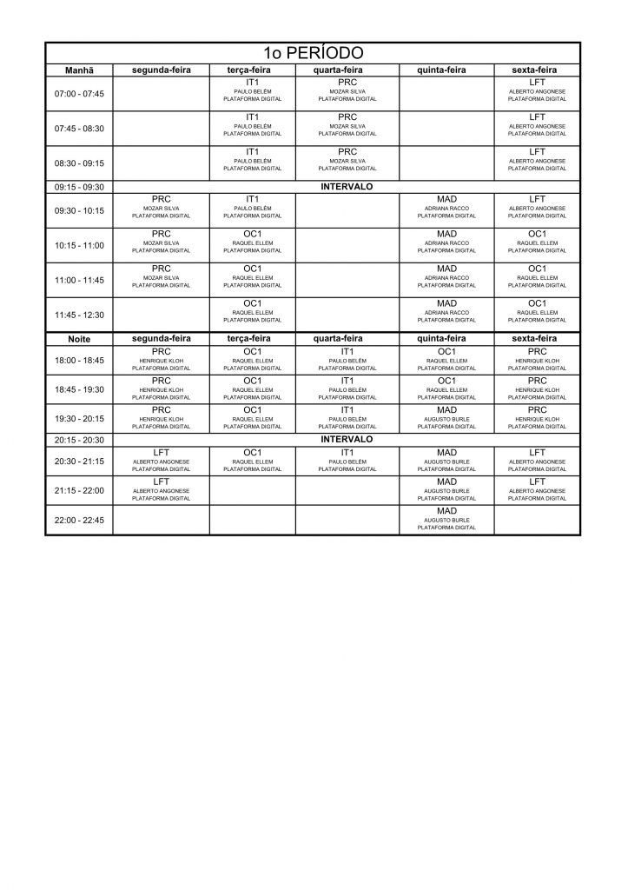
Segundo Período:
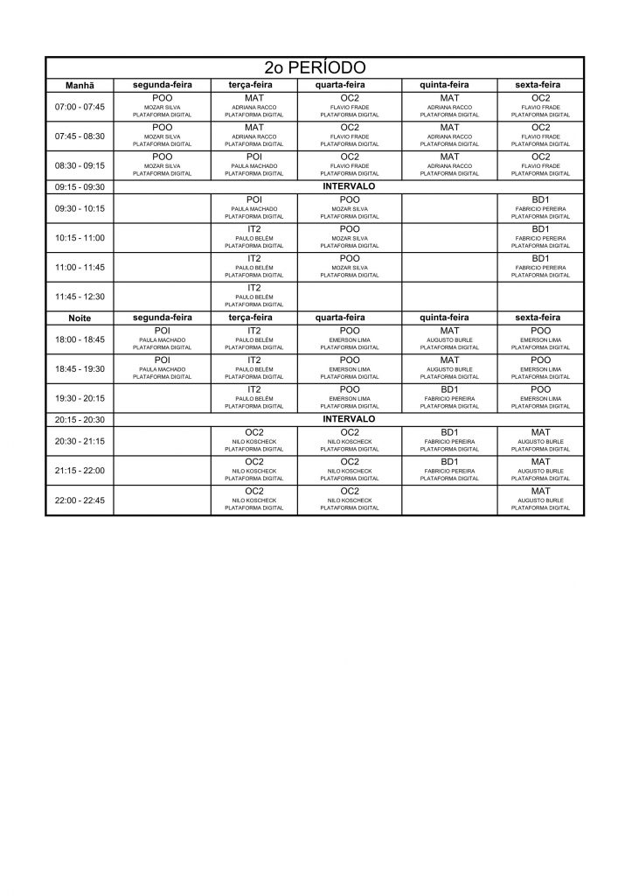
Terceiro Período:
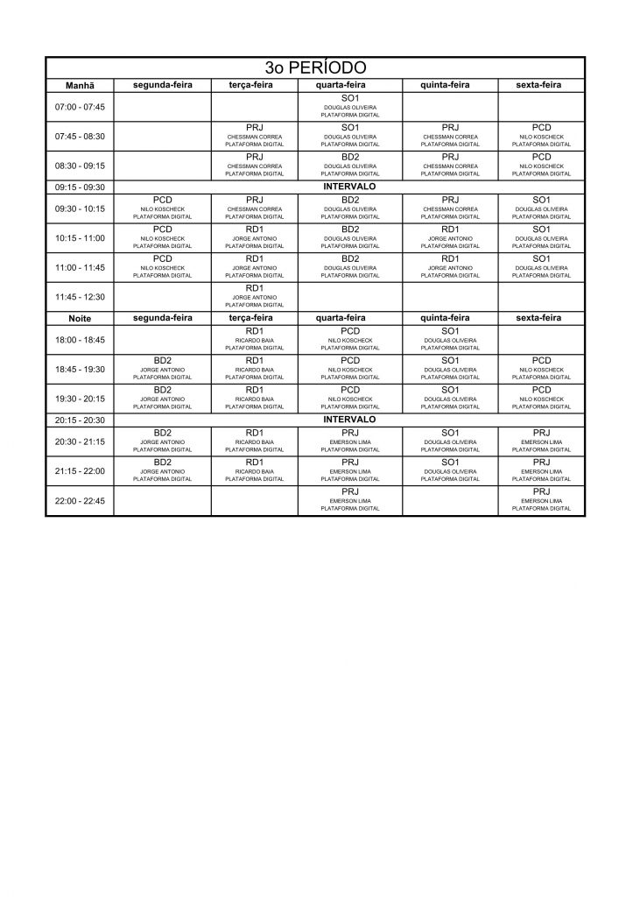
Quarto Período:
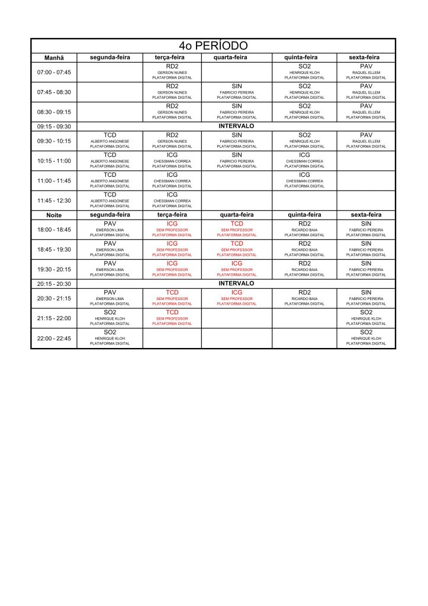
Quinto Período:
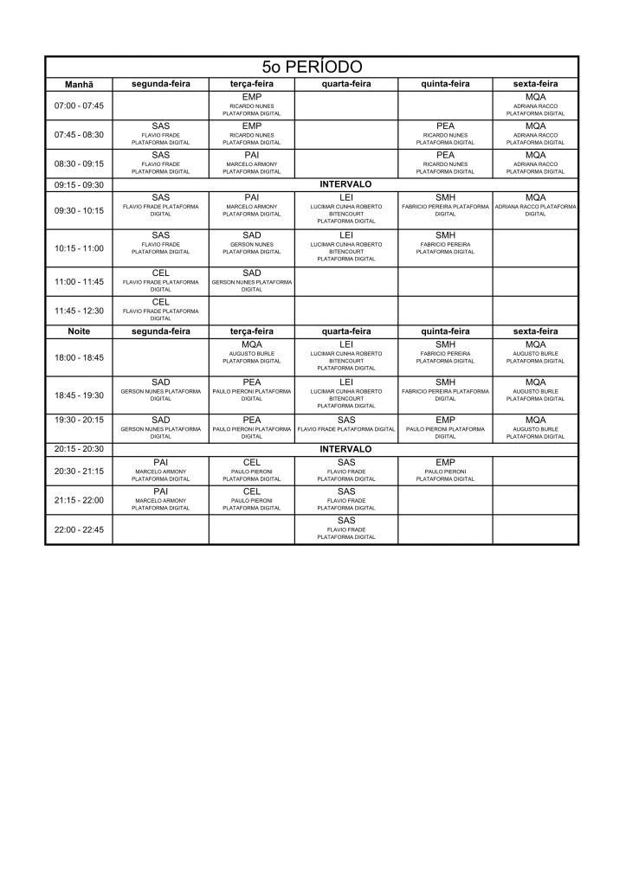
Disciplinas Extras:
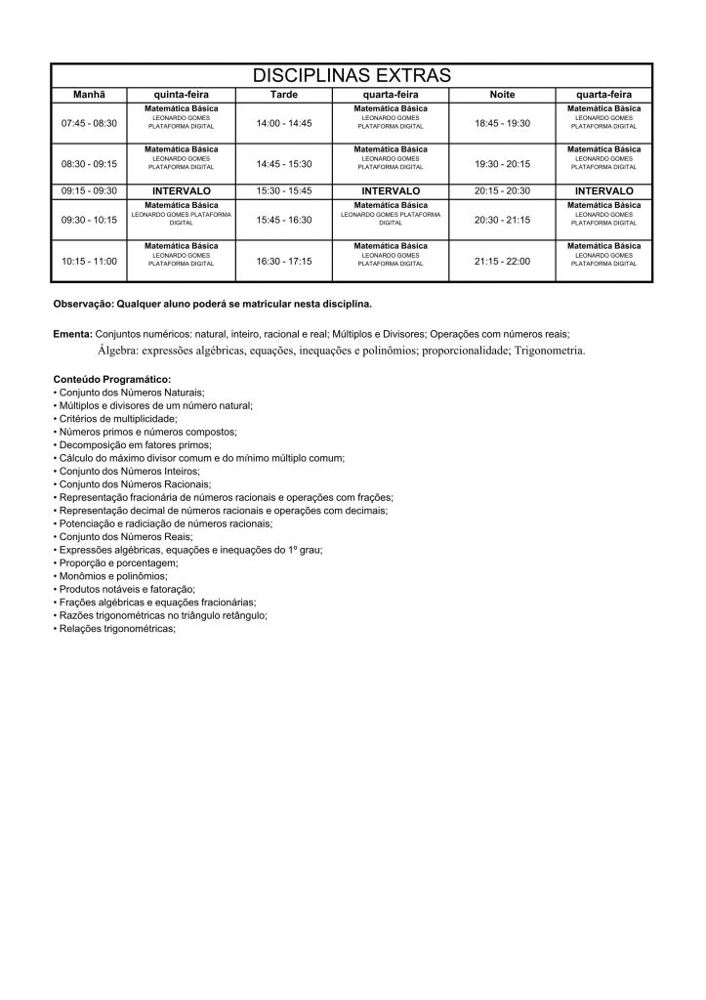
Ingresso de novos alunos para o 2º semestre de 2021
O ingresso neste semestre será feito através da seleção pelo SiSu:
http://www.faetec.rj.gov.br/index.php/inscricoes/concursos/153-sisu-2021
https://sisu.mec.gov.br/#/
Lista dos Alunos Excedentes na pré-matrícula 2021/2
Resultado da pré-matrícula para o semestre 2021-2.Tivemos alunos excedentes apenas em BD2-N e POO-N.
BD2 Noite:
Alexandre Viana Gonçalves
Caio Henrique Pimentel da Silva
Felipe Candido dos Reis
Felipe Fontes de Aguiar
Larissa Gonçalves Barroso Simões
Lucas Camarinho Lopes dos Santos
Marcello Soares Parpinelli Cortezv
Rodrigo Soares Melo
Victor Rentes dos Santos Bernardes
POO Noite:
Alexandre Viana Gonçalvesv
Arthur Fernandes de Burlet
Elton Leão da Fé
Hudson Luiz Agostini Ramos
Rodrigo Soares Melo
Victor Rentes dos Santos Bernardes
Alexandre Viana Gonçalves
Arthur Fernandes de Burlet
Elton Leão da Fé
Hudson Luiz Agostini Ramos
Rodrigo Soares Melo
Victor Rentes dos Santos Bernardes
Trancamento de Matrícula 2021-1
Prazo para trancamento: antes de 5 de julho de 2021.
O pedido deve ser feito via e-mail institucional da FAETERJ
Petrópolis para a Secretaria Acadêmica.
Horário 2021-1
Primeiro Período:
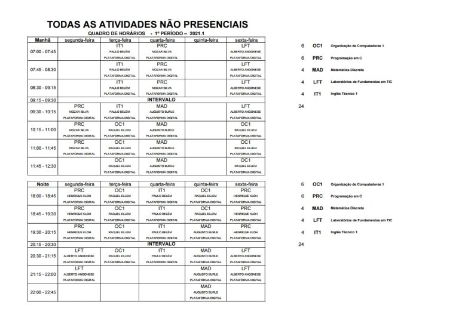
Segundo Período:
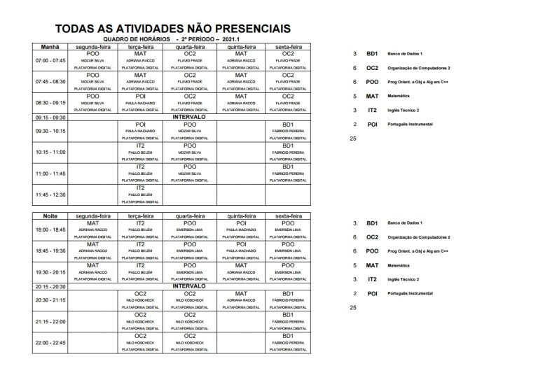
Terceiro Período:
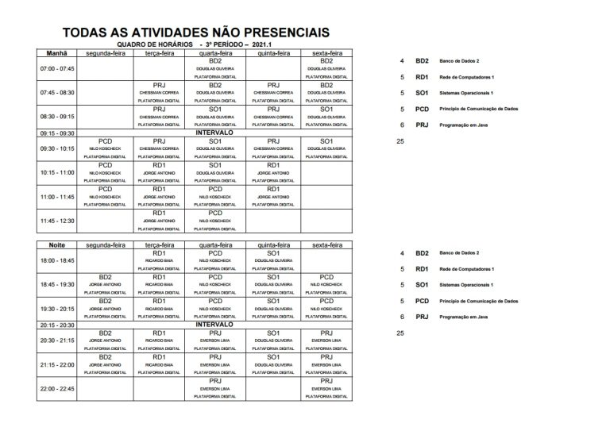
Quarto Período:
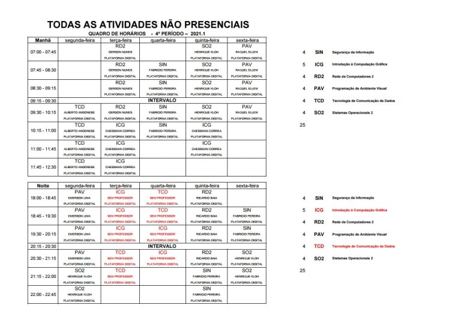
Quinto Período:
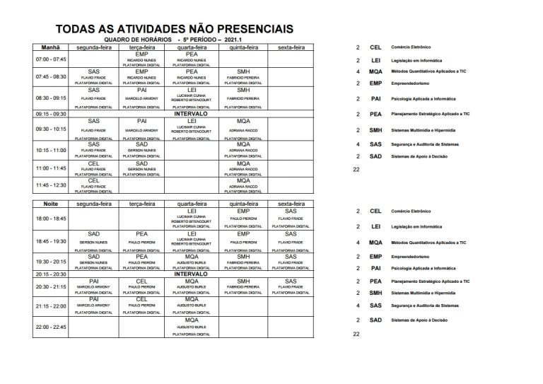
Disciplinas Extras:
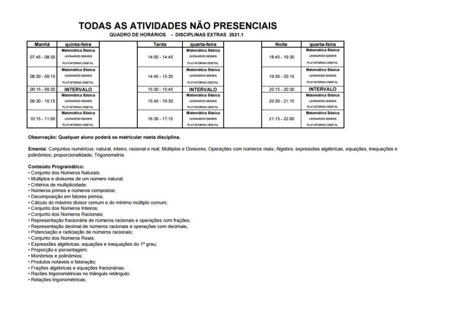